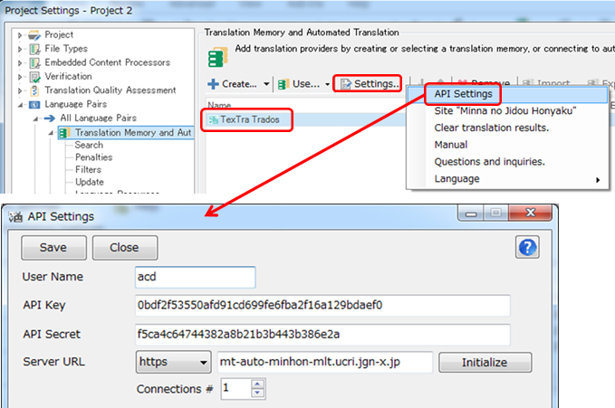
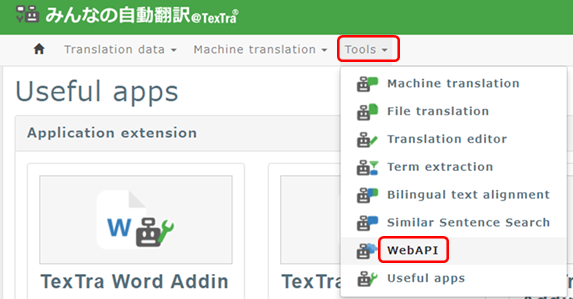
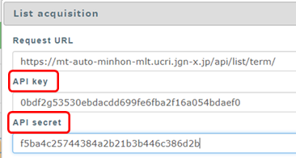
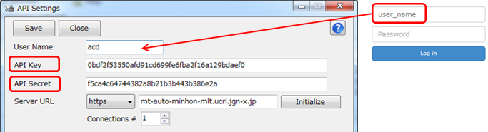
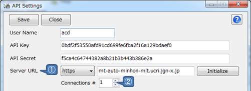
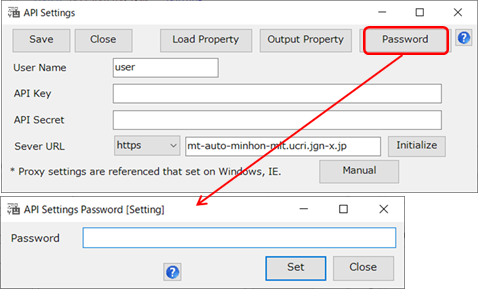
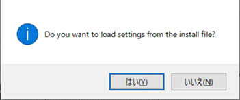

API Settings
In order to interact with a Web site,
you
must first make "API set" with TexTra Trados Addin.
Press
Project Settings > Translation Memory and Automated Translation
> TexTra Trados > Settings > API Settings,

You can retrieve the setting from the Web site.
After logging in,
the Menu> Tools> web
API.

Press any api button or URL button on the "Web API
List" page.
You can paste to the TexTra Trados Addin API
setting screen
and copy "API Key" "API Secret" from the displayed
screen.

Enter the User ID that you enter when log in to the
Web
site.


① Set a Server URL for
API.
Normally, it is not necessary to change
this.
When changing the URL,
you also need to set up the protocol
(http/https).
② Set a number to connect to a server at the
same time.
Usually, please set 1 to
connect stable.
* The "Server URL" input on this screen is different
from
"URL of machine translation
API"
explained in the part "Translation
Settings".
* Proxy Settings
Set
on Windows or IE.
* If you need to set
up the proxy, please let the proxy server
administrator know the following information:
User agent => "TexTra Trados NICT"
・ Password Setting (for
Administrator)
Set
a
password
for
opening the "API Settings"
page.
The
password set
here
will
make you the sole administrator of API
settings,
disabling
other users from seeing the
settings.

On
the password input page, click on the reset
button
to
clear the password and API setting
fields.
・ Automatic API Settings (for
Administrator)
Automatic
API
setting
for
the first-time API
setting
(including
the API-Settings-page-password
setting).
Place
the "api.ini" file in the installation
folder
(where
the .vsto file of this plug-in is
located)
either
manually or using the
installer.
After
filling the API setting
fields,
click
on the "output property"
button
to
output the settings into a
file.
(the
parameters contained in the file will be
encncrypted).
Upon
opening the API
page,
you'll
be asked if you
want
to
load the settings from the
file.

You
need to clear the API setting
fields
to
see the message
above.